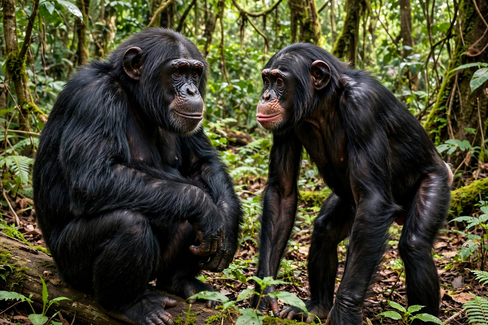

Pan (genus)
| Pan | |
|---|---|
| Kingdom | Animalia |
| Family | Hominidae |
| Genus | Pan (Oken, 1816) |
| Species | Pan troglodytes (chimpanzee); Pan paniscus (bonobo) |
| Range | Central and West Africa |
| Conservation | Both species Endangered |

The genus Pan consists of two living species: the chimpanzee (Pan troglodytes) and the bonobo (Pan paniscus). Native to the forests and savannahs of central and west Africa, they are, along with gorillas, orangutans and humans, members of the great ape family Hominidae — and together they are humanity's closest living relatives, sharing roughly 98–99% of our DNA, with a common ancestor some 6–7 million years ago.
Species and behaviour
Chimpanzees live north of the Congo River in fission–fusion communities led by an alpha male; they hunt cooperatively, wage lethal intergroup conflicts, and are renowned tool users — termite fishing, nut cracking and leaf sponges among them. Bonobos, found only south of the Congo in the Democratic Republic of Congo, live in more egalitarian, female-centred societies noted for resolving conflict through social and sexual contact rather than aggression.
Cognition and culture
Decades of field research, notably by Jane Goodall at Gombe and Frans de Waal, have documented self-recognition, empathy, planning, regional cultural traditions in tool use and grooming, and the capacity to learn sign language or lexigrams in captivity.
Conservation
Both species are listed as Endangered on the IUCN Red List, threatened by habitat loss, bushmeat hunting and disease. Population declines have prompted debate over granting great apes legal personhood protections.
See also: Chimpanzee, Bonobo, Hominidae, Jane Goodall.